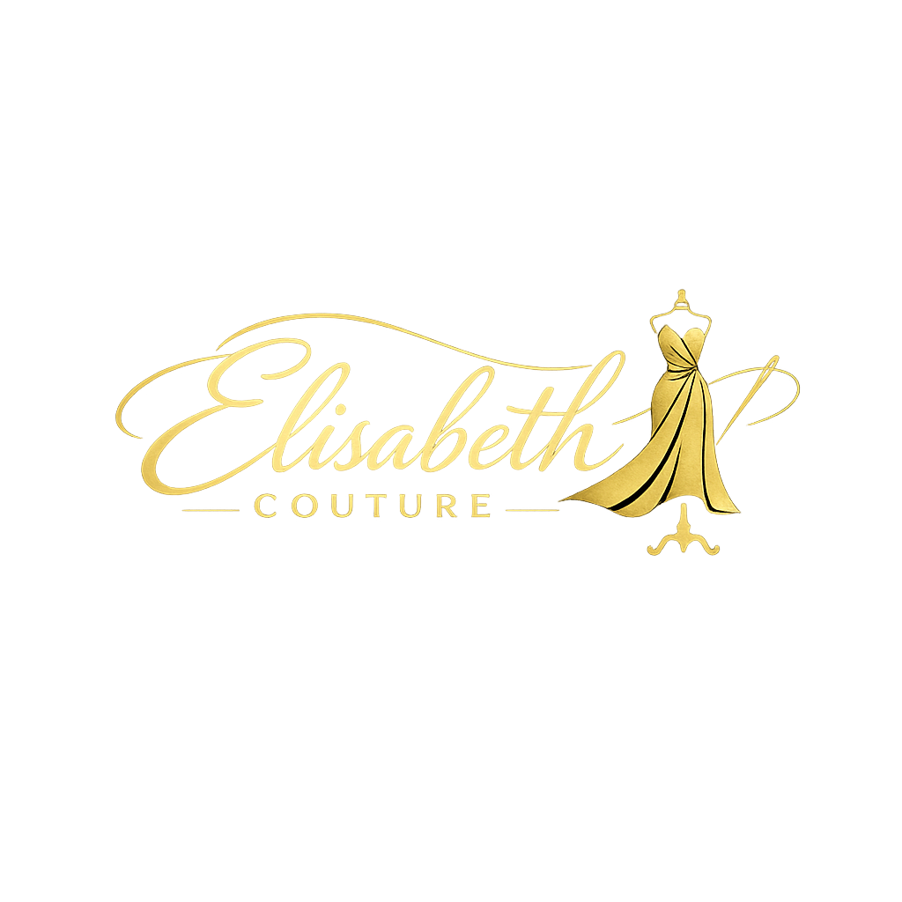
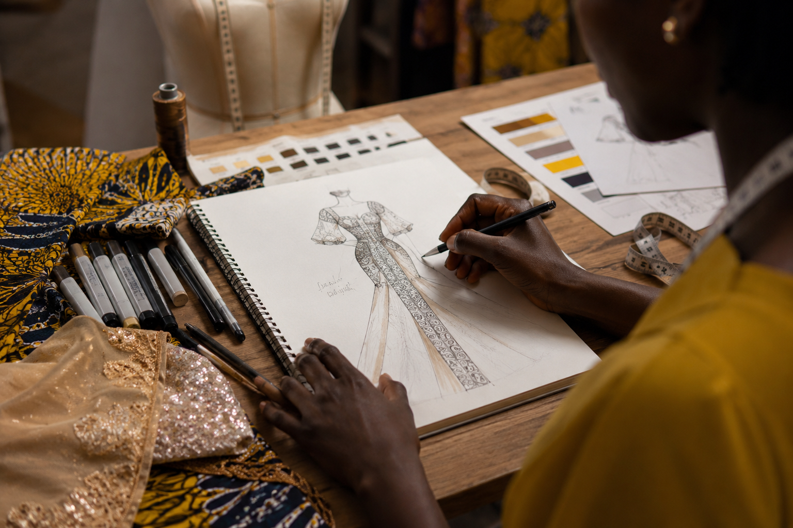
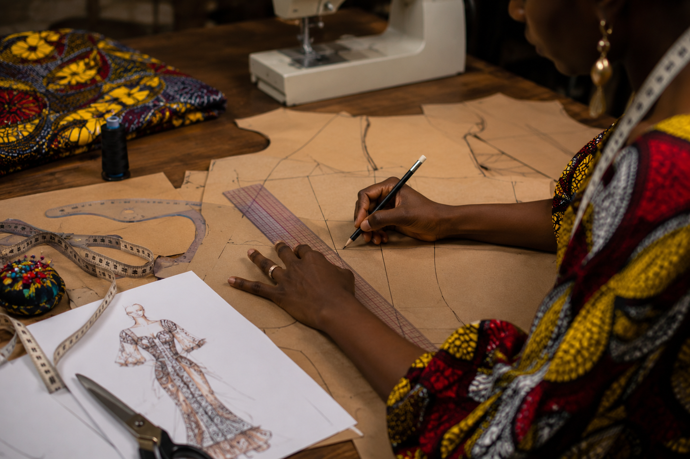
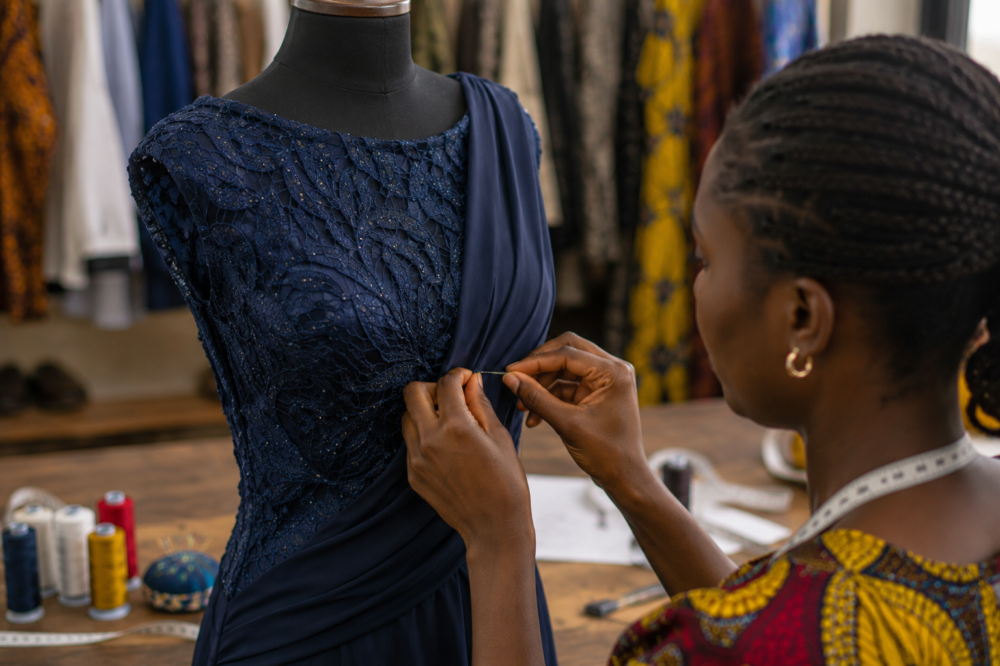
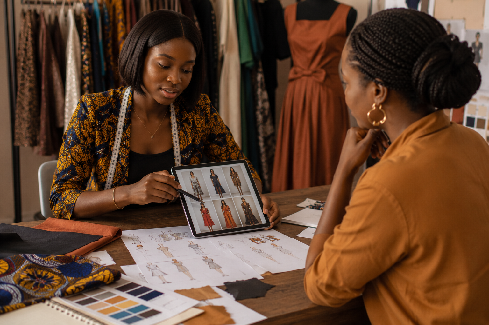

Nous concevons des tenues uniques de A à Z, en tenant compte de votre morphologie, de vos préférences stylistiques et de l’occasion. Chaque pièce est pensée pour refléter votre personnalité et mettre en valeur votre élégance, grâce à un choix minutieux de tissus et de finitions.

Nos stylistes élaborent des patrons personnalisés qui servent de base à des créations originales. Ce travail de modélisme garantit un ajustement parfait et une coupe harmonieuse, tout en permettant d’explorer des designs innovants adaptés aux tendances actuelles.

Nous effectuons des retouches de précision sur tous types de vêtements, qu’il s’agisse d’un ourlet, d’un ajustement de taille ou d’une modification complexe. Notre objectif est de redonner vie à vos tenues et de vous offrir un tombé impeccable, comme si elles avaient été conçues sur mesure.

Nous proposons des consultations personnalisées pour vous aider à affirmer votre image et votre style. Nos experts vous accompagnent dans le choix des couleurs, des coupes et des accessoires, afin que chaque tenue devienne une véritable expression de votre identité.
Nous échangeons avec le client pour comprendre ses besoins, son style et l’occasion. Cette étape permet de définir une vision claire du projet.
Nous prenons des mesures précises afin d’assurer un ajustement parfait et une coupe adaptée à la morphologie du client.
Nos stylistes élaborent le patron et le design de la tenue, en choisissant les tissus et les finitions qui reflètent l’élégance souhaitée.
Le client essaie la tenue en cours de réalisation. Nous effectuons les ajustements nécessaires pour garantir confort et esthétique.
La tenue finalisée est remise au client, prête à être portée avec fierté lors de l’événement ou de l’occasion prévue.